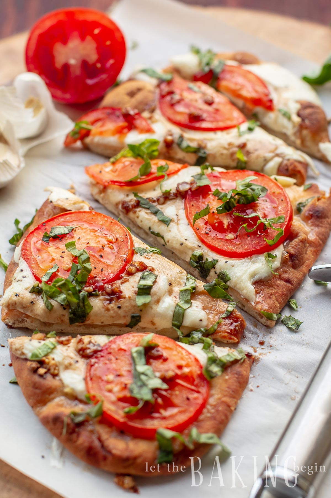

Margherita Flatbread

Ingredients
- naan bread, 1
- fresh mozzarella cheese, 3, sliced to ⅓- 1/2 inch thickness
- tomato, 1, sliced as thin as possible
- basil, 5-6 leaves
- garlic, 3 cloves, pressed; or 1 tsp dry garlic powder
- Olive oil, 1.5 Tbsp
- Balsamic Vinegar, 1.5 Tbsp
- Salt & Pepper, to taste
Steps
- Press 3 fresh garlic cloves and mix with 1.5 Tbsp oil.
- Brush the flatbread with oil & garlic with half
the mixture. Place in preheated to 350°F oven for 5 minutes to
crisp up.
- Remove from oven and place 3 slices of cheese on top of the
flatbread, sprinkle with salt & pepper, then place thinly sliced
tomatoes on top and repeat with a sprinkling of salt & pepper.
Place back in the oven for another 5 minutes, plus extra 2-3 minutes
on broil. Watch the bread closely, if its too dark before 2-3 minutes
remove it from the oven immediately.
- Meanwhile mix the remaining oil & garlic with 1.5 tbsp balsamic
vinegar, stirring until a smooth emulsion forms.
- Chop 5-6 basil leaves.
- Once flatbread pizza is baked and the edges are golden in color,
remove from the oven, drizzle with however much of the balsamic
vinegar mixture you would like, sprinkle with basil leaves,
slice and serve and enjoy!
Return to recipes